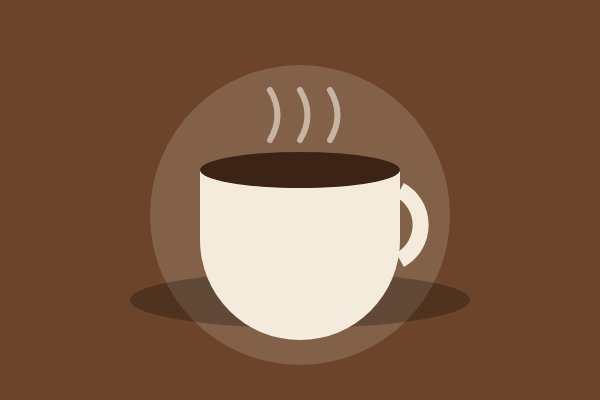
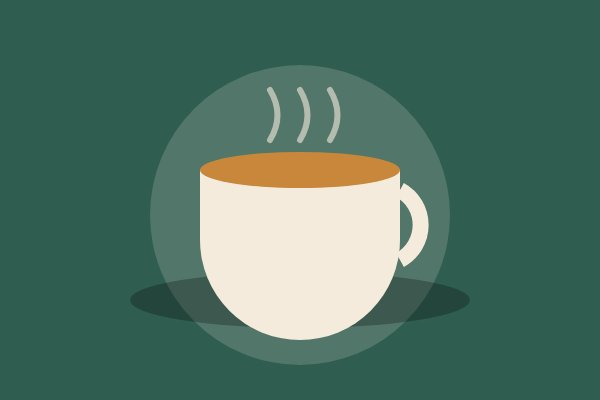
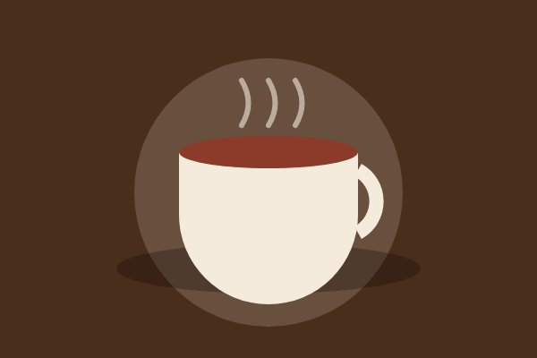
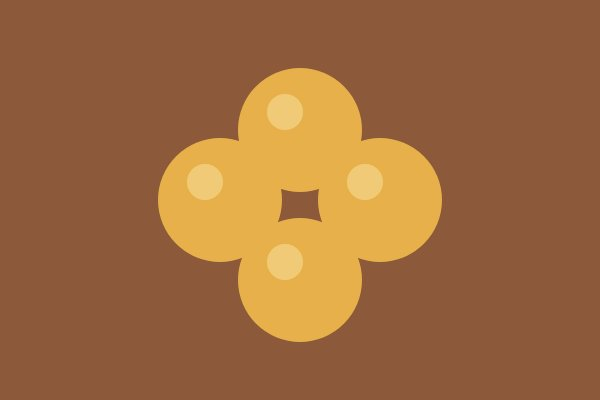

Café torrado toda manhã, no centro de São Paulo
Grãos de pequenos produtores, torra artesanal e métodos para todos os gostos.
Ver cardápioCardápio
-

Espresso
Extração de 30 ml, crema espessa.
R$ 7,50 -

Cappuccino
Espresso, leite vaporizado e canela.
R$ 13,90 -

Coado V60
Método filtrado, notas de frutas.
R$ 11,00 -

Pão de queijo
Receita mineira, assado na hora.
R$ 6,50
Preços dos grãos
| Café | Torra | 250 g | 500 g | 1 kg |
|---|---|---|---|---|
| Mantiqueira | Média | R$ 42,90 | R$ 79,90 | R$ 149,00 |
| Cerrado Mineiro | Média-escura | R$ 38,50 | R$ 72,00 | R$ 135,00 |
| Alta Mogiana | Clara | R$ 46,00 | R$ 86,00 | R$ 162,00 |
Dúvidas frequentes
Vocês moem o café na hora?
Sim. Escolha a moagem no balcão: grossa para prensa francesa, média para coado e fina para espresso.
Qual é a validade dos grãos?
Os grãos ficam melhores entre 7 e 30 dias depois da torra. A data da torra vem impressa no pacote.
Fazem entregas?
Entregamos na cidade de São Paulo em até 2 dias úteis. O frete é grátis em compras acima de R$ 150,00.
Tem opção sem lactose?
Sim. Todas as bebidas com leite podem ser feitas com leite sem lactose ou bebida de aveia.
Visite
Rua Augusta, 1200 · Consolação · São Paulo (SP)Segunda a sábado, das 7h às 20h.